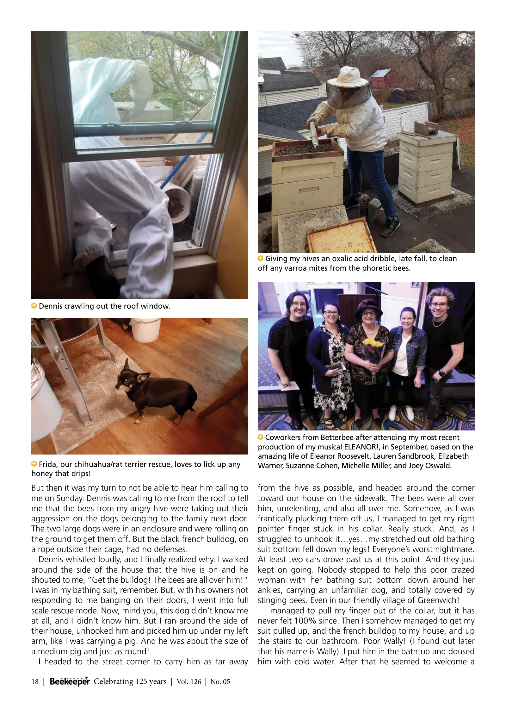

But then it was my turn to not be able to hear him calling to
me on Sunday. Dennis was calling to me from the roof to tell
me that the bees from my angry hive were taking out their
aggression on the dogs belonging to the family next door.
The two large dogs were in an enclosure and were rolling on
the ground to get them off. But the black french bulldog, on
a rope outside their cage, had no defenses.
Dennis whistled loudly, and I finally realized why. I walked
around the side of the house that the hive is on and he
shouted to me, “Get the bulldog! The bees are all over him!”
I was in my bathing suit, remember. But, with his owners not
responding to me banging on their doors, I went into full
scale rescue mode. Now, mind you, this dog didn’t know me
at all, and I didn’t know him. But I ran around the side of
their house, unhooked him and picked him up under my left
arm, like I was carrying a pig. And he was about the size of
a medium pig and just as round!
I headed to the street corner to carry him as far away
from the hive as possible, and headed around the corner
toward our house on the sidewalk. The bees were all over
him, unrelenting, and also all over me. Somehow, as I was
frantically plucking them off us, I managed to get my right
pointer finger stuck in his collar. Really stuck. And, as I
struggled to unhook it…yes…my stretched out old bathing
suit bottom fell down my legs! Everyone’s worst nightmare.
At least two cars drove past us at this point. And they just
kept on going. Nobody stopped to help this poor crazed
woman with her bathing suit bottom down around her
ankles, carrying an unfamiliar dog, and totally covered by
stinging bees. Even in our friendly village of Greenwich!
I managed to pull my finger out of the collar, but it has
never felt 100% since. Then I somehow managed to get my
suit pulled up, and the french bulldog to my house, and up
the stairs to our bathroom. Poor Wally! (I found out later
that his name is Wally). I put him in the bathtub and doused
him with cold water. After that he seemed to welcome a
Dennis crawling out the roof window.
Giving my hives an oxalic acid dribble, late fall, to clean
off any varroa mites from the phoretic bees.
Coworkers from Betterbee after attending my most recent
production of my musical ELEANOR!, in September, based on the
amazing life of Eleanor Roosevelt. Lauren Sandbrook, Elizabeth
Warner, Suzanne Cohen, Michelle Miller, and Joey Oswald.
Frida, our chihuahua/rat terrier rescue, loves to lick up any
honey that drips!
18 |
Celebrating 125 years | Vol. 126 | No. 05